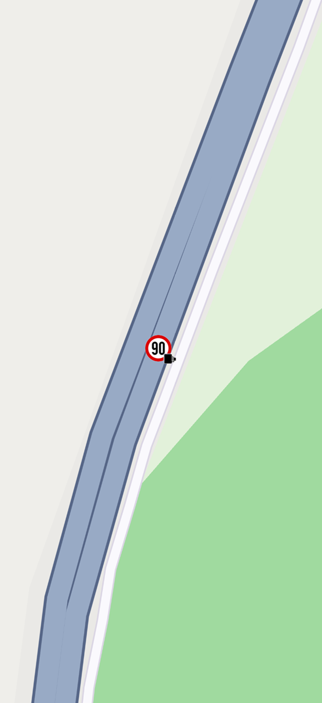

Manage Content¶
Manage offline content
Content Types¶
The ContentType enum defines supported downloadable content:
viewStyleHighRes- High-dpi screen optimized map styles that can be applied offline, including default styles and user-created styles from the studioviewStyleLowRes- Low-dpi screen map styles optimized for smaller file sizesroadMap- Offline maps covering countries and regions for search, routing, and navigationhumanVoice- Pre-recorded voice files for spoken navigation instructions and warnings
💡 Tip: Use high-resolution map styles for most use cases.
Other values within the ContentType enum are not fully supported by the SDK.
ContentStore overview¶
The ContentStore class manages and provides a list of downloadable items. Each item is represented by the ContentStoreItem class, which includes details such as name, image, type, version, and size. You can download and delete content through this class.
🚨 Alert: Ensure your API token is set and valid. Some operations return
GemError.busyif no valid API key is set.🚨 Alert: Modifying downloaded maps (download, delete, update) may interrupt ongoing operations such as search, route calculation, or navigation. The onComplete callback will be triggered with
GemError.invalidatedif this occurs.
List Online Content¶
Retrieve a list of available content using the asyncGetStoreContentList method from the ContentStore class.
This method returns a ProgressListener? to stop the operation if needed. If the operation fails to start, it returns null.
The method accepts the content type as an argument and a callback that provides:
- The operation error code
- A list of
ContentStoreItemobjects - A flag indicating whether the list is cached
final ProgressListener? listener = ContentStore.asyncGetStoreContentList(ContentType.roadMap, (err, items, isCached){
if (err != GemError.success){
showSnackbar("Failed to get list of content store items: $err");
} else {
/// Do something with the items and isCached flag.
}
});📝 Note: Call
asyncGetStoreContentListonly when an active internet connection is available and the current offline version is not expired. If no internet connection is available or the current offline map version is expired, usegetLocalContentListinstead.🚨 Alert: Do not invoke
asyncGetStoreContentListwithinonMapCreatedcallback. It will fail withGemError.notFoundorGemError.noConnection(unless the request targetsContentType.humanVoice). Wait until map tiles are fully loaded before calling it.
List Local Content¶
The getLocalContentList method can be used to get the list of local content available offline.
final List<ContentStoreItem> items = ContentStore.getLocalContentList(ContentType.roadMap);
/// Do something with the items📝 Note: The
getLocalContentListmethod returns content store items that are either ready for use or currently downloading, as well as those pending download.
Filter Content¶
Obtain a filtered list of available content by using the asyncGetStoreFilteredList method. Filter content by specifying country ISO 3166-3 codes and geographic area using a RectangleGeographicArea.
final contentStoreItemListCompleter = Completer<List<ContentStoreItem>?>();
ContentStore.asyncGetStoreFilteredList(
type: contentType,
area: RectangleGeographicArea(
topLeft: Coordinates(latitude: 53.7731, longitude: -1.7990),
bottomRight: Coordinates(latitude: 38.4549, longitude: 21.1696)),
onComplete: (err, result) {
contentStoreItemListCompleter.complete(result);
});
final res = await contentStoreItemListCompleter.future;📝 Note: The
getStoreFilteredListmethod returns the filtered content store items that were last requested viaasyncGetStoreFilteredList.
Method behavior¶
| Condition | onComplete Result |
|---|---|
The countries list contains invalid ISO 3166-3 codes |
GemError.success with an empty ContentStoreItem list. |
The countries list includes countries incompatible with the specified RectangleGeographicArea |
GemError.success with an empty ContentStoreItem list. |
| Insufficient memory to complete the operation | GemError.noMemory with an empty ContentStoreItem list. |
Invalid GeographicArea (e.g., invalid coordinates) |
GemError.success with a full list of ContentStoreItem; behaves as if no filter was applied. |
The area parameter is an empty TilesCollectionGeographicArea |
GemError.invalidInput with an empty ContentStoreItem list. |
| HTTP request failed | GemError.general with an empty ContentStoreItem list. |
Content Store Item Fields¶
General information¶
| Field Name | Description |
|---|---|
name |
The name of the associated product, automatically translated. |
id |
The unique ID of the item in the content store. |
type |
The type of the product as a ContentType value. |
fileName |
The full path to the content data file. |
totalSize |
The total size of the content in bytes. |
availableSize |
The downloaded size of the content. |
updateSize |
The update size if an update is available. |
status |
The current status of the item as a ContentStoreItemStatus. |
contentParameters |
Additional information about an item is the form of a SearchableParameterList object |
imgPreview |
The image associated with the content store item. The user is responsible to check if the image is valid |
💡 Tip: Check if a
ContentStoreItemis downloaded/available/downloading/updating using thestatusfield value:
unavailable- The content store item is not downloaded and cannot be usedcompleted- The content store item has been downloaded and is ready to usepaused- The download operation has been paused by the userdownloadQueued- The download is queued and will proceed once resources are availabledownloadWaitingNetwork- No internet connection; the download will proceed once a network connection is availabledownloadWaitingFreeNetwork- The SDK is waiting for a free network connection to continue the downloaddownloadRunning- The download is actively in progressupdateWaiting- An update operation is underway
The contentParameters field provides information such as:
For roadMap type:
Copyright- Copyright information for the road map (String)MapData provider- Name of the map data provider (String)Release date- Release date inDD.MM.YYYYformat (String)Default name- Name of the item (String)
For viewStyleHighRes type:
Background-Color- Background color in decimal format (String), e.g.,4294957738(converts to hex#FFFFDAAA). Check brightness to determine if the style is dark-mode or light-mode
For humanVoice type:
language- BCP 47 language code, e.g.,eng_IRL(String)gender- Speaker's gender, e.g.,Female(String)type- Voice type, e.g.,human(String)native_language- Language name in native form, e.g., English (String)
Get the image using the imgPreview getter:
final bool isImagePreviewAvailable = contentStoreItem.isImagePreviewAvailable;
if (isImagePreviewAvailable) {
final Img previewImage = contentStoreItem.imgPreview;
final Uint8List? bytes = previewImage.getRenderableImageBytes(
size: Size(80, 80)
);
// Do something with the preview image.
}🚨 Alert: Content store items of type
roadMapdo not have an image preview. Use theMapDetails.getCountryFlagImgmethod to get the flag image associated with a country code instead.
Use the countryCodes getter to obtain the country codes associated with a content store item of type roadMap.
Download and update information¶
| Field Name | Description |
|---|---|
clientVersion |
The client version of the content. |
updateVersion |
The update version if an update is available. Returns a dummy object with fields set to 0 if no new version is available |
downloadProgress |
The current download progress as a percentage. |
updateItem |
The corresponding update item if an update is in progress. |
isCompleted |
Checks if the item has been completely downloaded. |
isUpdatable |
Checks if the item has a newer version available. |
canDeleteContent |
Checks if the content can be deleted. |
While the download is in progress, retrieve details about the downloaded content:
isCompleted- Returns true if the download is completed; otherwise, returnsfalsedownloadProgress- Returns the download progress as an integer between 0 and 100. Returns0if the download has not startedstatus- Returns the current status of the content store item
Fields for ContentType.roadMap¶
| Field Name | Description |
|---|---|
chapterName |
Some large countries are divided into multiple content store items (e.g., the USA is split into states). All items within the same country share the same chapter. This chapter is empty if the item is not of the RoadMap type or if the country is not divided into multiple items. |
countryCodes |
A list of country codes (ISO 3166-1 alpha-3) associated with the product. |
language |
The full language details for the product. |
Fields for ContentType.humanVoice¶
| Field Name | Description |
|---|---|
countryCodes |
A list of country codes (ISO 3166-1 alpha-3) associated with the product. |
language |
The full language details for the product. |
💡 Tip: Use the ISOCodeConversions class for conversions between different types of codes. See the internationalization documentation for more details.
Download Content Store Item¶
Download a content store item using the asyncDownload method:
contentStoreItem.asyncDownload(
(error) {
showSnackbar("Download completed with code $error");
},
onProgress: (progress){
print("Download progress: ${progress.toString()} / 100");
},
);onComplete callback is invoked at the end of the operation, returning the download result. If the item is successfully downloaded, err is set to GemError.success. In case of an error, other values may be returned, e.g., GemError.io if the item is already downloaded.
Provide an optional onProgress callback to receive real-time progress updates as an integer between 0 and 100.
Download on extra charged networks¶
The SDK can restrict downloads on networks with additional charges.
Enable downloads on such networks using the setAllowOffboardServiceOnExtraChargedNetwork method from the SdkSettings class.
SdkSettings.setAllowOffboardServiceOnExtraChargedNetwork(ServiceGroupType.contentService, true);asyncDownload method with allowChargedNetworks set to true to bypass the value set via setAllowOffboardServiceOnExtraChargedNetwork.
If a download is requested on an extra-charged network and setAllowOffboardServiceOnExtraChargedNetwork is false without passing true for the allowChargedNetworks parameter, the download will be automatically scheduled. It will proceed once the user switches to a non-extra-charged network. The status field of the corresponding ContentStoreItem object will be set to ContentStoreItemStatus.downloadQueued.
Pause download¶
Pause the download using the pauseDownload method. This method takes an optional callback that is invoked when the pause operation completes. Resume the download by calling asyncDownload as shown above.
🚨 Alert: Do not perform further operations on the
ContentStoreItemobject until the pause operation has completed and the corresponding callback has been invoked.
Delete downloaded content¶
Remove downloaded content from local storage by calling the deleteContent method on the corresponding ContentStoreItem object after checking if the item can be removed:
if (contentStoreItem.canDeleteContent){
final error = contentStoreItem.deleteContent();
showSnackbar("Item ${contentStoreItem.name} deletion resulted with code $error");
} else {
showSnackbar("Item cannot be deleted");
}🚨 Alert: Do not confuse
ContentStore/ContentStoreItemclasses with theMapDownloaderServiceclass:
ContentStore API- Downloads full offline content, including data for free-text search, routing, and turn-by-turn navigationMapDownloaderService- Caches map tiles for visual display purposes. Tiles downloaded viaMapDownloaderServicedo not support most search operations, routing, or navigation while offlineSee the download individual map tiles documentation for more details.
Do not confuse
LandmarkStorewithContentStore.LandmarkStoremanages landmark data, whileContentStoremanages offline map content.
Download Overlays¶
Download overlays for specific regions to enable offline functionality. First download a map region, then overlays become available for download within those offline areas. Download overlays for offline use through the grabOverlayOfflineData method of OverlayService.
final overlayUid = CommonOverlayId.safety.id; // Example overlay UID (e.g., speed cameras)
if (!OverlayService.isOverlayOfflineDataGrabberSupported(overlayUid)) {
print('Overlay offline data grabber not supported for this overlay');
return;
}
OverlayService.enableOverlayOfflineDataGrabber(overlayUid);
final taskHandler = OverlayService.grabOverlayOfflineData(
uid: overlayUid,
onComplete: (error) {
// Handle the completion of the offline data grabber (check GemError)
}
);
// Optionally, you can cancel the task if needed
// OverlayService.cancelGrabOverlayOfflineData(overlayUid);
// Disable the grabber when it's no longer needed
OverlayService.disableOverlayOfflineDataGrabber(overlayUid);⚠️ Attention: Not all overlays support offline data grabbing. Use the
isOverlayOfflineDataGrabberSupportedmethod to check if a specific overlay supports this feature.
After downloading, overlay items are available in offline mode within the downloaded map regions. Verify successful download by checking if overlay items are visible inside the downloaded map region in offline mode.

Offline speed camera overlay item visible
💡 Tip: Enable the offline data grabber using
enableOverlayOfflineDataGrabberbefore initiating the download process. Otherwise, theonCompletecallback will returnGemError.activationand the method will returnnullinstead of aTaskHandlerobject.
Call enableOverlayOfflineDataGrabber only with an overlay UID that supports offline grabbing. If the UID is unsupported, enabling will not work and will not return GemError.success.
📝 Note: Not all overlay types support offline functionality, e.g., Alerts or Public Transit Stops. Public transport stops require an internet connection to display relevant data and are rendered as landmarks instead of overlay items in offline mode.
Check if the overlay data grabber has been enabled for a specific overlay using the isOverlayOfflineDataGrabberEnabled method. Keeping the grabber enabled automatically starts downloading overlay data when a new map region is downloaded or updated, ensuring users have the latest offline overlay data available.
Download or Update Content In Background¶
Enable content updates and downloads while the app runs in the background by configuring your app to support foreground services on both iOS and Android.